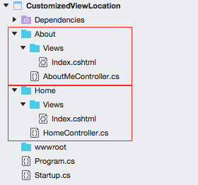
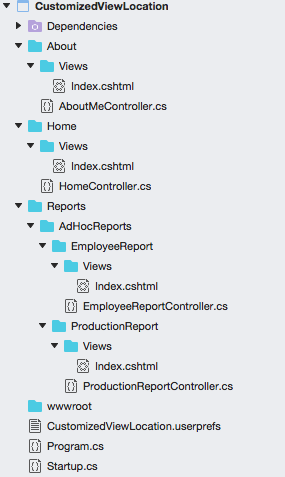
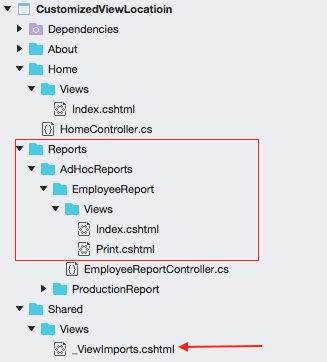

<!DOCTYPE HTML>
<html>
<head>
  <meta charset="utf-8">
  
  <title>ASP.NET Core 2.0 自定义 _ViewStart 和 _ViewImports 的目录位置 | Ricky Lin</title>
  <meta name="author" content="Ricky Lin">
  
  <meta name="description" content="这是 Ricky Lin 的博客站点">
  
  
  <meta name="viewport" content="width=device-width, initial-scale=1, maximum-scale=1">

  <meta property="og:title" content="ASP.NET Core 2.0 自定义 _ViewStart 和 _ViewImports 的目录位置"/>
  <meta property="og:site_name" content="Ricky Lin"/>

  
    <meta property="og:image" content=""/>
  

  
  
    <link href="/favicon.png" rel="icon">
  

  <!-- CSS -->
  <link rel="stylesheet" href="/css/themes/cerulean.css" media="screen" type="text/css">
  <link rel="stylesheet" href="/css/font-awesome.css" media="screen" type="text/css">
  <link rel="stylesheet" href="/css/style.css" media="screen" type="text/css">
  <link rel="stylesheet" href="/css/responsive.css" media="screen" type="text/css">
  <link rel="stylesheet" href="/css/highlight.css" media="screen" type="text/css">
  <link rel="stylesheet" href="/css/highlight-default.min.css" media="screen" type="text/css">
  <link rel="stylesheet" href="/css/google-fonts.css" media="screen" type="text/css">
  <link rel="stylesheet" href="/css/comment.css" media="screen" type="text/css">
  <!--[if lt IE 9]>
    <script src="//html5shiv.googlecode.com/svn/trunk/html5.js"></script>
	<script src="https://cdnjs.cloudflare.com/ajax/libs/es5-shim/4.5.9/es5-shim.min.js"></script>
    <script src="https://cdnjs.cloudflare.com/ajax/libs/es5-shim/4.5.7/es5-sham.min.js"></script>
  <![endif]-->

  <script src="/js/jquery-2.0.3.min.js"></script>
  
  <!-- analytics -->
  


  <script type="text/javascript">
    var sdkInstance="appInsightsSDK";window[sdkInstance]="appInsights";var aiName=window[sdkInstance],aisdk=window[aiName]||function(e){
      function n(e){t[e]=function(){var n=arguments;t.queue.push(function(){t[e].apply(t,n)})}}var t={config:e};t.initialize=!0;var i=document,a=window;setTimeout(function(){var n=i.createElement("script");n.src=e.url||"https://az416426.vo.msecnd.net/next/ai.2.min.js",i.getElementsByTagName("script")[0].parentNode.appendChild(n)});try{t.cookie=i.cookie}catch(e){}t.queue=[],t.version=2;for(var r=["Event","PageView","Exception","Trace","DependencyData","Metric","PageViewPerformance"];r.length;)n("track"+r.pop());n("startTrackPage"),n("stopTrackPage");var s="Track"+r[0];if(n("start"+s),n("stop"+s),n("setAuthenticatedUserContext"),n("clearAuthenticatedUserContext"),n("flush"),!(!0===e.disableExceptionTracking||e.extensionConfig&&e.extensionConfig.ApplicationInsightsAnalytics&&!0===e.extensionConfig.ApplicationInsightsAnalytics.disableExceptionTracking)){n("_"+(r="onerror"));var o=a[r];a[r]=function(e,n,i,a,s){var c=o&&o(e,n,i,a,s);return!0!==c&&t["_"+r]({message:e,url:n,lineNumber:i,columnNumber:a,error:s}),c},e.autoExceptionInstrumented=!0}return t
      }({
          instrumentationKey:"728568e9-6aa0-4b28-9466-4ba46620ade0"
      });
    
    window[aiName]=aisdk,aisdk.queue&&0===aisdk.queue.length&&aisdk.trackPageView({});
  </script>


<meta name="generator" content="Hexo 6.2.0">
<style>.github-emoji { position: relative; display: inline-block; width: 1.2em; min-height: 1.2em; overflow: hidden; vertical-align: top; color: transparent; }  .github-emoji > span { position: relative; z-index: 10; }  .github-emoji img, .github-emoji .fancybox { margin: 0 !important; padding: 0 !important; border: none !important; outline: none !important; text-decoration: none !important; user-select: none !important; cursor: auto !important; }  .github-emoji img { height: 1.2em !important; width: 1.2em !important; position: absolute !important; left: 50% !important; top: 50% !important; transform: translate(-50%, -50%) !important; user-select: none !important; cursor: auto !important; } .github-emoji-fallback { color: inherit; } .github-emoji-fallback img { opacity: 0 !important; }</style>
</head>

<body>
  <nav id="main-nav" class="navbar navbar-inverse navbar-default navbar-fixed-top" role="navigation">
    <div class="container">
      <button type="button" class="navbar-header navbar-toggle" data-toggle="collapse" data-target=".navbar-collapse">
	<span class="sr-only">Toggle navigation</span>
        <span class="icon-bar"></span>
        <span class="icon-bar"></span>
        <span class="icon-bar"></span>
      </button>
       <a class="navbar-brand" href="/">Ricky Lin</a>
      <div class="collapse navbar-collapse nav-menu">
		<ul class="nav navbar-nav">
		  
		  <li>
			<a href="/archives" title="All the articles.">
			  <i class="fa fa-archive"></i>Archives
			</a>
		  </li>
		  
		  <li>
			<a href="/tags" title="All the tags.">
			  <i class="fa fa-tags"></i>Tags
			</a>
		  </li>
		  
		  <li>
			<a href="/HelpfulLinks" title="Helpful links gathered from the Internet.">
			  <i class="fa fa-link"></i>Helpful Links
			</a>
		  </li>
		  
		</ul>
      </div>
    </div> <!-- container -->
</nav>
<div class="clearfix"></div>

  <div class="container">
    <div class="content">
      


	
		<div class="page-header page-header-inverse ">		
			<h1 class="title title-inverse "> ASP.NET Core 2.0 自定义 _ViewStart 和 _ViewImports 的目录位置</h1>
		</div>		
	


<div class="row post">
	<!-- cols -->
	
	<div id="top_meta"></div>
	<div class="col-md-9">
	

	<!-- content -->
	<div class="mypage">		
	  		

	  <p>在 ASP.NET Core 里扩展 Razor 查找视图目录不是什么新鲜和困难的事情，但 <code>_ViewStart</code> 和 <code>_ViewImports</code> 这2个视图比较特殊，如果想让 Razor 在我们指定的目录中查找它们，则需要耗费一点额外的精力。本文将提供一种方法做到这一点。注意，文本仅适用于 ASP.NET Core 2.0+, 因为 Razor 在 2.0 版本里的内部实现有较大重构，因此这里提供的方法并不适用于 ASP.NET Core 1.x</p>
<p>为了全面描述 ASP.NET Core 2.0 中扩展 Razor 查找视图目录的能力，我们还是由浅入深，从最简单的扩展方式着手吧。</p>
<a id="more"></a>

<h1 id="准备工作"><a href="#准备工作" class="headerlink" title="准备工作"></a>准备工作</h1><p>首先，我们可以创建一个新的 ASP.NET Core 项目用于演示。</p>
<figure class="highlight bash"><table><tbody><tr><td class="gutter"><pre><span class="line">1</span><br><span class="line">2</span><br><span class="line">3</span><br></pre></td><td class="code"><pre><span class="line">mkdir CustomizedViewLocation</span><br><span class="line"><span class="built_in">cd</span> CustomizedViewLocation</span><br><span class="line">dotnet new web <span class="comment"># 创建一个空的 ASP.NET Core 应用</span></span><br></pre></td></tr></tbody></table></figure>

<p>接下来稍微调整下 Startup.cs 文件的内容，引入 MVC：</p>
<figure class="highlight csharp"><table><tbody><tr><td class="gutter"><pre><span class="line">1</span><br><span class="line">2</span><br><span class="line">3</span><br><span class="line">4</span><br><span class="line">5</span><br><span class="line">6</span><br><span class="line">7</span><br><span class="line">8</span><br><span class="line">9</span><br><span class="line">10</span><br><span class="line">11</span><br><span class="line">12</span><br><span class="line">13</span><br><span class="line">14</span><br><span class="line">15</span><br><span class="line">16</span><br><span class="line">17</span><br><span class="line">18</span><br><span class="line">19</span><br><span class="line">20</span><br><span class="line">21</span><br></pre></td><td class="code"><pre><span class="line"><span class="comment">// Startup.cs</span></span><br><span class="line"></span><br><span class="line"><span class="keyword">using</span> Microsoft.AspNetCore.Builder;</span><br><span class="line"><span class="keyword">using</span> Microsoft.AspNetCore.Hosting;</span><br><span class="line"><span class="keyword">using</span> Microsoft.Extensions.DependencyInjection;</span><br><span class="line"></span><br><span class="line"><span class="keyword">namespace</span> <span class="title">CustomizedViewLocation</span></span><br><span class="line">{</span><br><span class="line">    <span class="keyword">public</span> <span class="keyword">class</span> <span class="title">Startup</span></span><br><span class="line">    {</span><br><span class="line">        <span class="function"><span class="keyword">public</span> <span class="keyword">void</span> <span class="title">ConfigureServices</span>(<span class="params">IServiceCollection services</span>)</span></span><br><span class="line"><span class="function"></span>        {</span><br><span class="line">            services.AddMvc();</span><br><span class="line">        }</span><br><span class="line"></span><br><span class="line">        <span class="function"><span class="keyword">public</span> <span class="keyword">void</span> <span class="title">Configure</span>(<span class="params">IApplicationBuilder app, IHostingEnvironment env</span>)</span></span><br><span class="line"><span class="function"></span>        {</span><br><span class="line">            app.UseMvcWithDefaultRoute();</span><br><span class="line">        }</span><br><span class="line">    }</span><br><span class="line">}</span><br></pre></td></tr></tbody></table></figure>

<p>好了我们的演示项目已经搭好了架子。</p>
<h1 id="我们的目标"><a href="#我们的目标" class="headerlink" title="我们的目标"></a>我们的目标</h1><p>在我们的示例项目中，我们希望我们的目录组织方式是按照功能模块组织的，即同一个功能模块的所有 Controller 和 View 都放在同一个目录下。对于多个功能模块共享、通用的内容，比如 <code>_Layout</code>, <code>_Footer</code>, <code>_ViewStart</code> 和 <code>_ViewImports</code> 则单独放在根目录下的一个叫 Shared 的子目录中。</p>
<h1 id="最简单的方式：-ViewLocationFormats"><a href="#最简单的方式：-ViewLocationFormats" class="headerlink" title="最简单的方式： ViewLocationFormats"></a>最简单的方式： ViewLocationFormats</h1><p>假设我们现在有2个功能模块 Home 和 About，分别需要 <code>HomeController</code> 和它的 <code>Index</code> view，以及 <code>AboutMeController</code> 和它的 <code>Index</code> view. 因为一个 Controller 可能会包含多个 view，因此我选择为每一个功能模块目录下再增加一个 <code>Views</code> 目录，集中这个功能模块下的所有 View. 整个目录结构看起来是这样的：</p>
<p></p>
<p>从目录结构中我们可以发现我们的视图目录为 <code>/{controller}/Views/{viewName}.cshtml</code>, 比如 <code>HomeController</code> 的 <code>Index</code> 视图所在的位置就是 <code>/Home/Views/Index.cshtml</code>，这跟 MVC 默认的视图位置 <code>/Views/{Controller}/{viewName}.cshtml</code> 很相似（<code>/Views/Home/Index.cshtml</code>），共同的特点是路径中的 Controller 部分和 View 部分是动态的，其它的都是固定不变的。其实 MVC 默认的寻找视图位置的方式一点都不高端，类似于这样：</p>
<figure class="highlight csharp"><table><tbody><tr><td class="gutter"><pre><span class="line">1</span><br><span class="line">2</span><br><span class="line">3</span><br><span class="line">4</span><br><span class="line">5</span><br><span class="line">6</span><br><span class="line">7</span><br></pre></td><td class="code"><pre><span class="line"><span class="keyword">string</span> controllerName = <span class="string">"Home"</span>; <span class="comment">// “我”知道当前 Controller 是 Home</span></span><br><span class="line"><span class="keyword">string</span> viewName = <span class="string">"Index"</span>; <span class="comment">// "我“知道当前需要解析的 View 的名字</span></span><br><span class="line"></span><br><span class="line"><span class="comment">// 把 viewName 和 controllerName 带入一个代表视图路径的格式化字符串得到最终的视图路径。</span></span><br><span class="line"><span class="keyword">string</span> viewPath = <span class="keyword">string</span>.Format(<span class="string">"/Views/{1}/{0}.cshtml"</span>, viewName, controllerName);</span><br><span class="line"></span><br><span class="line"><span class="comment">// 根据 viewPath 找到视图文件做后续处理</span></span><br></pre></td></tr></tbody></table></figure>

<p>如果我们可以构建另一个格式字符串，其中 <code>{0}</code> 代表 View 名称， <code>{1}</code> 代表 Controller 名称，然后替换掉默认的 <code>/Views/{1}/{0}.cshtml</code>，那我们就可以让 Razor 到我们设定的路径去检索视图。而要做到这点非常容易，利用 <code>ViewLocationFormats</code>，代码如下：</p>
<figure class="highlight csharp"><table><tbody><tr><td class="gutter"><pre><span class="line">1</span><br><span class="line">2</span><br><span class="line">3</span><br><span class="line">4</span><br><span class="line">5</span><br><span class="line">6</span><br><span class="line">7</span><br></pre></td><td class="code"><pre><span class="line"><span class="comment">// Startup.cs</span></span><br><span class="line"></span><br><span class="line"><span class="function"><span class="keyword">public</span> <span class="keyword">void</span> <span class="title">ConfigureServices</span>(<span class="params">IServiceCollection services</span>)</span></span><br><span class="line"><span class="function"></span>{</span><br><span class="line">    IMvcBuilder mvcBuilder = services.AddMvc();</span><br><span class="line">    mvcBuilder.AddRazorOptions(options =&gt; options.ViewLocationFormats.Add(<span class="string">"/{1}/Views/{0}.cshtml"</span>));</span><br><span class="line">}</span><br></pre></td></tr></tbody></table></figure>

<p>收工，就这么简单。顺便说一句，还有一个参数 <code>{2}</code>，代表 Area 名称。</p>
<p>这种做法是不是已经很完美了呢？No, No, No. 谁能看出来这种做法有什么缺点？</p>
<p>这种做法有2个缺点。</p>
<ol>
<li><p>所有的功能模块目录必须在根目录下创建，无法建立层级目录关系。且看下面的目录结构截图：</p>
<p></p>
<p>注意 Reports 目录，因为我们有种类繁多的报表，因此我们希望可以把各种报表分门别类放入各自的目录。但是这么做之后，我们之前设置的 <code>ViewLocationFormats</code> 就无效了。例如我们访问 URL <code>/EmployeeReport/Index</code>, Razor 会试图寻找 <code>/EmployeeReport/Views/Index.cshtml</code>，但其真正的位置是 <code>/Reports/AdHocReports/EmployeeReport/Views/Index.cshtml</code>。前面还有好几层目录呢～</p>
</li>
<li><p>因为所有的 View 文件不再位于同一个父级目录之下，因此 <code>_ViewStart.cshtml</code> 和 <code>_ViewImports.cshtml</code> 的作用将受到极大限制。原因后面细表。</p>
</li>
</ol>
<p>下面我们来分别解决这2个问题。</p>
<h1 id="最灵活的方式：-IViewLocationExpander"><a href="#最灵活的方式：-IViewLocationExpander" class="headerlink" title="最灵活的方式： IViewLocationExpander"></a>最灵活的方式： IViewLocationExpander</h1><p>有时候，我们的视图目录除了 controller 名称 和 view 名称2个变量外，还涉及到别的动态部分，比如上面的 Reports 相关 Controller，视图路径有更深的目录结构，而 controller 名称仅代表末级的目录。此时，我们需要一种更灵活的方式来处理： <code>IViewLocationExpander</code>，通过实现 <code>IViewLocationExpander</code>，我们可以得到一个 <code>ViewLocationExpanderContext</code>，然后据此更灵活地创建 view location formats。</p>
<p>对于我们要解决的目录层次问题，我们首先需要观察，然后会发现目录层次结构和 Controller 类型的命名空间是有对应关系的。例如如下定义：</p>
<figure class="highlight csharp"><table><tbody><tr><td class="gutter"><pre><span class="line">1</span><br><span class="line">2</span><br><span class="line">3</span><br><span class="line">4</span><br><span class="line">5</span><br><span class="line">6</span><br><span class="line">7</span><br><span class="line">8</span><br><span class="line">9</span><br></pre></td><td class="code"><pre><span class="line"><span class="keyword">using</span> Microsoft.AspNetCore.Mvc;</span><br><span class="line"></span><br><span class="line"><span class="keyword">namespace</span> <span class="title">CustomizedViewLocation.Reports.AdHocReports.EmployeeReport</span></span><br><span class="line">{</span><br><span class="line">    <span class="keyword">public</span> <span class="keyword">class</span> <span class="title">EmployeeReportController</span> : <span class="title">Controller</span></span><br><span class="line">    {</span><br><span class="line">        <span class="function"><span class="keyword">public</span> IActionResult <span class="title">Index</span>(<span class="params"></span>)</span> =&gt; View();</span><br><span class="line">    }</span><br><span class="line">}</span><br></pre></td></tr></tbody></table></figure>

<p>观察 <code>EmployeeReportController</code> 的命名空间 <code>CustomizedViewLocation.Reports.AdHocReports.EmployeeReport</code>以及 Index 视图对应的目录 <code>/Reports/AdHocReports/EmployeeReport/Views/Index.cshtml</code> 可以发现如下对应关系：</p>
<table>
<thead>
<tr>
<th align="left">命名空间</th>
<th align="left">视图路径</th>
<th align="left">ViewLocationFormat</th>
</tr>
</thead>
<tbody><tr>
<td align="left">CustomizedViewLocation</td>
<td align="left">项目根路径</td>
<td align="left">/</td>
</tr>
<tr>
<td align="left">Reports.AdHocReports</td>
<td align="left">Reports/AdHocReports</td>
<td align="left">把整个命名空间以“.”为分割点掐头去尾，然后把“.”替换为“／”</td>
</tr>
<tr>
<td align="left">EmployeeReport</td>
<td align="left">EmployeeReport</td>
<td align="left">Controller 名称</td>
</tr>
<tr>
<td align="left"></td>
<td align="left">Views</td>
<td align="left">固定目录</td>
</tr>
<tr>
<td align="left"></td>
<td align="left">Index.cshtml</td>
<td align="left">视图名称.cshtml</td>
</tr>
</tbody></table>
<p>所以我们 <code>IViewLocationExpander</code> 的实现类型主要是获取和处理 Controller 的命名空间。且看下面的代码。</p>
<figure class="highlight csharp"><table><tbody><tr><td class="gutter"><pre><span class="line">1</span><br><span class="line">2</span><br><span class="line">3</span><br><span class="line">4</span><br><span class="line">5</span><br><span class="line">6</span><br><span class="line">7</span><br><span class="line">8</span><br><span class="line">9</span><br><span class="line">10</span><br><span class="line">11</span><br><span class="line">12</span><br><span class="line">13</span><br><span class="line">14</span><br><span class="line">15</span><br><span class="line">16</span><br><span class="line">17</span><br><span class="line">18</span><br><span class="line">19</span><br><span class="line">20</span><br><span class="line">21</span><br><span class="line">22</span><br><span class="line">23</span><br><span class="line">24</span><br><span class="line">25</span><br><span class="line">26</span><br><span class="line">27</span><br><span class="line">28</span><br><span class="line">29</span><br><span class="line">30</span><br><span class="line">31</span><br><span class="line">32</span><br><span class="line">33</span><br><span class="line">34</span><br><span class="line">35</span><br><span class="line">36</span><br><span class="line">37</span><br><span class="line">38</span><br><span class="line">39</span><br><span class="line">40</span><br><span class="line">41</span><br><span class="line">42</span><br><span class="line">43</span><br><span class="line">44</span><br><span class="line">45</span><br><span class="line">46</span><br><span class="line">47</span><br><span class="line">48</span><br><span class="line">49</span><br><span class="line">50</span><br><span class="line">51</span><br><span class="line">52</span><br><span class="line">53</span><br><span class="line">54</span><br><span class="line">55</span><br><span class="line">56</span><br><span class="line">57</span><br><span class="line">58</span><br><span class="line">59</span><br><span class="line">60</span><br></pre></td><td class="code"><pre><span class="line"><span class="comment">// NamespaceViewLocationExpander.cs</span></span><br><span class="line"></span><br><span class="line"><span class="keyword">using</span> System;</span><br><span class="line"><span class="keyword">using</span> System.Collections.Generic;</span><br><span class="line"><span class="keyword">using</span> System.Linq;</span><br><span class="line"><span class="keyword">using</span> System.IO;</span><br><span class="line"><span class="keyword">using</span> Microsoft.Extensions.DependencyInjection;</span><br><span class="line"><span class="keyword">using</span> Microsoft.AspNetCore.Mvc.Razor;</span><br><span class="line"><span class="keyword">using</span> Microsoft.AspNetCore.Hosting;</span><br><span class="line"><span class="keyword">using</span> Microsoft.AspNetCore.Mvc;</span><br><span class="line"><span class="keyword">using</span> Microsoft.AspNetCore.Mvc.Controllers;</span><br><span class="line"></span><br><span class="line"><span class="keyword">namespace</span> <span class="title">CustomizedViewLocation</span></span><br><span class="line">{</span><br><span class="line">    <span class="keyword">public</span> <span class="keyword">class</span> <span class="title">NamespaceViewLocationExpander</span> : <span class="title">IViewLocationExpander</span></span><br><span class="line">    {</span><br><span class="line">        <span class="keyword">private</span> <span class="keyword">const</span> <span class="keyword">string</span> VIEWS_FOLDER_NAME = <span class="string">"Views"</span>;</span><br><span class="line"></span><br><span class="line">        <span class="function"><span class="keyword">public</span> IEnumerable&lt;<span class="keyword">string</span>&gt; <span class="title">ExpandViewLocations</span>(<span class="params">ViewLocationExpanderContext context, IEnumerable&lt;<span class="keyword">string</span>&gt; viewLocations</span>)</span></span><br><span class="line"><span class="function"></span>        {</span><br><span class="line">            ControllerActionDescriptor cad = context.ActionContext.ActionDescriptor <span class="keyword">as</span> ControllerActionDescriptor;</span><br><span class="line">            <span class="keyword">string</span> controllerNamespace = cad.ControllerTypeInfo.Namespace;</span><br><span class="line">            <span class="keyword">int</span> firstDotIndex = controllerNamespace.IndexOf(<span class="string">'.'</span>);</span><br><span class="line">            <span class="keyword">int</span> lastDotIndex = controllerNamespace.LastIndexOf(<span class="string">'.'</span>);</span><br><span class="line">            <span class="keyword">if</span> (firstDotIndex &lt; <span class="number">0</span>)</span><br><span class="line">                <span class="keyword">return</span> viewLocations;</span><br><span class="line"></span><br><span class="line">            <span class="keyword">string</span> viewLocation;</span><br><span class="line">            <span class="keyword">if</span> (firstDotIndex == lastDotIndex)</span><br><span class="line">            {</span><br><span class="line">                <span class="comment">// controller folder is the first level sub folder of root folder</span></span><br><span class="line">                viewLocation = <span class="string">"/{1}/Views/{0}.cshtml"</span>;</span><br><span class="line">            }</span><br><span class="line">            <span class="keyword">else</span></span><br><span class="line">            {</span><br><span class="line">                <span class="keyword">string</span> viewPath = controllerNamespace.Substring(firstDotIndex + <span class="number">1</span>, lastDotIndex - firstDotIndex - <span class="number">1</span>).Replace(<span class="string">"."</span>, <span class="string">"/"</span>);</span><br><span class="line">                viewLocation = <span class="string">$"/<span class="subst">{viewPath}</span>/{{1}}/Views/{{0}}.cshtml"</span>;</span><br><span class="line">            }</span><br><span class="line"></span><br><span class="line">            <span class="keyword">if</span> (viewLocations.Any(l =&gt; l.Equals(viewLocation, StringComparison.InvariantCultureIgnoreCase)))</span><br><span class="line">                <span class="keyword">return</span> viewLocations;</span><br><span class="line"></span><br><span class="line">            <span class="keyword">if</span> (viewLocations <span class="keyword">is</span> List&lt;<span class="keyword">string</span>&gt; locations)</span><br><span class="line">            {</span><br><span class="line">                locations.Add(viewLocation);</span><br><span class="line">                <span class="keyword">return</span> locations;</span><br><span class="line">            }</span><br><span class="line"></span><br><span class="line">            <span class="comment">// it turns out the viewLocations from ASP.NET Core is List&lt;string&gt;, so the code path should not go here.</span></span><br><span class="line">            List&lt;<span class="keyword">string</span>&gt; newViewLocations = viewLocations.ToList();</span><br><span class="line">            newViewLocations.Add(viewLocation);</span><br><span class="line">            <span class="keyword">return</span> newViewLocations;</span><br><span class="line">        }</span><br><span class="line"></span><br><span class="line">        <span class="function"><span class="keyword">public</span> <span class="keyword">void</span> <span class="title">PopulateValues</span>(<span class="params">ViewLocationExpanderContext context</span>)</span></span><br><span class="line"><span class="function"></span>        {</span><br><span class="line"></span><br><span class="line">        }</span><br><span class="line">    }</span><br><span class="line">}</span><br></pre></td></tr></tbody></table></figure>

<p>上面对命名空间的处理略显繁琐。其实你可以不用管，重点是我们可以得到 <code>ViewLocationExpanderContext</code>，并据此构建新的 view location format 然后与现有的 <code>viewLocations</code> 合并并返回给 ASP.NET Core。</p>
<p>细心的同学可能还注意到一个空的方法 <code>PopulateValues</code>，这玩意儿有什么用？具体作用可以参照<a href="https://stackoverflow.com/a/41435134" target="_blank" rel="noopener">这个 StackOverflow 的问题</a>，基本上来说，一旦某个 Controller 及其某个 View 找到视图位置之后，这个对应关系就会缓存下来，以后就不会再调用 <code>ExpandViewLocations</code>方法了。但是，如果你有这种情况，就是同一个 Controller， 同一个视图名称但是还应该依据某些特别条件去找不同的视图位置，那么就可以利用 <code>PopulateValues</code> 方法填充一些特定的 Value， 这些 Value 会参与到缓存键的创建， 从而控制到视图位置缓存的创建。</p>
<p>下一步，把我们的 <code>NamespaceViewLocationExpander</code> 注册一下：</p>
<figure class="highlight csharp"><table><tbody><tr><td class="gutter"><pre><span class="line">1</span><br><span class="line">2</span><br><span class="line">3</span><br><span class="line">4</span><br><span class="line">5</span><br><span class="line">6</span><br><span class="line">7</span><br><span class="line">8</span><br><span class="line">9</span><br><span class="line">10</span><br><span class="line">11</span><br></pre></td><td class="code"><pre><span class="line"><span class="comment">// Startup.cs</span></span><br><span class="line"></span><br><span class="line"><span class="function"><span class="keyword">public</span> <span class="keyword">void</span> <span class="title">ConfigureServices</span>(<span class="params">IServiceCollection services</span>)</span></span><br><span class="line"><span class="function"></span>{</span><br><span class="line">    IMvcBuilder mvcBuilder = services.AddMvc();</span><br><span class="line">    mvcBuilder.AddRazorOptions(options =&gt; </span><br><span class="line">    {</span><br><span class="line">        <span class="comment">// options.ViewLocationFormats.Add("/{1}/Views/{0}.cshtml"); we don't need this any more if we make use of NamespaceViewLocationExpander</span></span><br><span class="line">        options.ViewLocationExpanders.Add(<span class="keyword">new</span> NamespaceViewLocationExpander());</span><br><span class="line">    });</span><br><span class="line">}</span><br></pre></td></tr></tbody></table></figure>
<p>另外，有了 <code>NamespaceViewLocationExpander</code>， 我们就不需要前面对 <code>ViewLocationFormats</code> 的追加了，因为那种情况作为一种特例已经在 <code>NamespaceViewLocationExpander</code> 中处理了。<br>至此，目录分层的问题解决了。</p>
<h1 id="ViewStart-cshtml-和-ViewImports-的起效机制与调整"><a href="#ViewStart-cshtml-和-ViewImports-的起效机制与调整" class="headerlink" title="_ViewStart.cshtml 和 _ViewImports 的起效机制与调整"></a>_ViewStart.cshtml 和 _ViewImports 的起效机制与调整</h1><p>对这2个特别的视图，我们并不陌生，通常在 _ViewStart.cshtml 里面设置 Layout 视图，然后每个视图就自动地启用了那个 Layout 视图，在 _ViewImports.cshtml 里引入的命名空间和 TagHelper 也会自动包含在所有视图里。它们为什么会起作用呢？</p>
<p>_ViewImports 的秘密藏在 <a href="https://github.com/aspnet/Razor/blob/rel/2.0.0/src/Microsoft.AspNetCore.Razor.Language/RazorTemplateEngine.cs" target="_blank" rel="noopener">RazorTemplateEngine 类</a> 和 <a href="https://github.com/aspnet/Razor/blob/rel/2.0.0/src/Microsoft.AspNetCore.Mvc.Razor.Extensions/MvcRazorTemplateEngine.cs" target="_blank" rel="noopener">MvcRazorTemplateEngine 类</a>中。</p>
<p>MvcRazorTemplateEngine 类指明了 “_ViewImports.cshtml” 作为默认的名字。</p>
<figure class="highlight csharp"><table><tbody><tr><td class="gutter"><pre><span class="line">1</span><br><span class="line">2</span><br><span class="line">3</span><br><span class="line">4</span><br><span class="line">5</span><br><span class="line">6</span><br><span class="line">7</span><br><span class="line">8</span><br><span class="line">9</span><br><span class="line">10</span><br><span class="line">11</span><br><span class="line">12</span><br></pre></td><td class="code"><pre><span class="line"><span class="comment">// MvcRazorTemplateEngine.cs 部分代码</span></span><br><span class="line"><span class="comment">// 完整代码: https://github.com/aspnet/Razor/blob/rel/2.0.0/src/Microsoft.AspNetCore.Mvc.Razor.Extensions/MvcRazorTemplateEngine.cs</span></span><br><span class="line"></span><br><span class="line"><span class="keyword">public</span> <span class="keyword">class</span> <span class="title">MvcRazorTemplateEngine</span> : <span class="title">RazorTemplateEngine</span></span><br><span class="line">{</span><br><span class="line">    <span class="function"><span class="keyword">public</span> <span class="title">MvcRazorTemplateEngine</span>(<span class="params">RazorEngine engine, RazorProject project</span>)</span></span><br><span class="line"><span class="function">        : <span class="title">base</span>(<span class="params">engine, project</span>)</span></span><br><span class="line"><span class="function"></span>    {</span><br><span class="line">        Options.ImportsFileName = <span class="string">"_ViewImports.cshtml"</span>;</span><br><span class="line">        Options.DefaultImports = GetDefaultImports();</span><br><span class="line">    }</span><br><span class="line">}</span><br></pre></td></tr></tbody></table></figure>

<p>RazorTemplateEngine 类则表明了 Razor 是如何去寻找 _ViewImports.cshtml 文件的。</p>
<figure class="highlight csharp"><table><tbody><tr><td class="gutter"><pre><span class="line">1</span><br><span class="line">2</span><br><span class="line">3</span><br><span class="line">4</span><br><span class="line">5</span><br><span class="line">6</span><br><span class="line">7</span><br><span class="line">8</span><br><span class="line">9</span><br><span class="line">10</span><br><span class="line">11</span><br><span class="line">12</span><br><span class="line">13</span><br><span class="line">14</span><br><span class="line">15</span><br><span class="line">16</span><br></pre></td><td class="code"><pre><span class="line"><span class="comment">// RazorTemplateEngine.cs 部分代码</span></span><br><span class="line"><span class="comment">// 完整代码：https://github.com/aspnet/Razor/blob/rel/2.0.0/src/Microsoft.AspNetCore.Razor.Language/RazorTemplateEngine.cs</span></span><br><span class="line"></span><br><span class="line"><span class="keyword">public</span> <span class="keyword">class</span> <span class="title">RazorTemplateEngine</span></span><br><span class="line">{</span><br><span class="line">    <span class="function"><span class="keyword">public</span> <span class="keyword">virtual</span> IEnumerable&lt;RazorProjectItem&gt; <span class="title">GetImportItems</span>(<span class="params">RazorProjectItem projectItem</span>)</span></span><br><span class="line"><span class="function"></span>    {</span><br><span class="line">        <span class="keyword">var</span> importsFileName = Options.ImportsFileName;</span><br><span class="line">        <span class="keyword">if</span> (!<span class="keyword">string</span>.IsNullOrEmpty(importsFileName))</span><br><span class="line">        {</span><br><span class="line">            <span class="keyword">return</span> Project.FindHierarchicalItems(projectItem.FilePath, importsFileName);</span><br><span class="line">        }</span><br><span class="line"></span><br><span class="line">        <span class="keyword">return</span> Enumerable.Empty&lt;RazorProjectItem&gt;();</span><br><span class="line">    }</span><br><span class="line">}</span><br></pre></td></tr></tbody></table></figure>

<p><code>FindHierarchicalItems</code> 方法会返回一个路径集合，其中包括从视图当前目录一路到根目录的每一级目录下的 _ViewImports.cshtml 路径。换句话说，如果从根目录开始，到视图所在目录的每一层目录都有 _ViewImports.cshtml 文件的话，那么它们都会起作用。这也是为什么通常我们在 根目录下的 Views 目录里放一个 _ViewImports.cshtml 文件就会被所有视图文件所引用，因为 Views 目录是是所有视图文件的父／祖父目录。那么如果我们的 _ViewImports.cshtml 文件不在视图的目录层次结构中呢？</p>
<p></p>
<p>在这个 DI 为王的 ASP.NET Core 世界里，RazorTemplateEngine 也被注册为 DI 里的服务，因此我目前的做法继承 <code>MvcRazorTemplateEngine</code> 类，微调 <code>GetImportItems</code> 方法的逻辑，加入我们的特定路径，然后注册到 DI 取代原来的实现类型。代码如下：</p>
<figure class="highlight csharp"><table><tbody><tr><td class="gutter"><pre><span class="line">1</span><br><span class="line">2</span><br><span class="line">3</span><br><span class="line">4</span><br><span class="line">5</span><br><span class="line">6</span><br><span class="line">7</span><br><span class="line">8</span><br><span class="line">9</span><br><span class="line">10</span><br><span class="line">11</span><br><span class="line">12</span><br><span class="line">13</span><br><span class="line">14</span><br><span class="line">15</span><br><span class="line">16</span><br><span class="line">17</span><br><span class="line">18</span><br><span class="line">19</span><br><span class="line">20</span><br><span class="line">21</span><br><span class="line">22</span><br></pre></td><td class="code"><pre><span class="line"><span class="comment">// ModuleRazorTemplateEngine.cs</span></span><br><span class="line"></span><br><span class="line"><span class="keyword">using</span> System.Collections.Generic;</span><br><span class="line"><span class="keyword">using</span> System.Linq;</span><br><span class="line"><span class="keyword">using</span> Microsoft.AspNetCore.Mvc.Razor.Extensions;</span><br><span class="line"><span class="keyword">using</span> Microsoft.AspNetCore.Razor.Language;</span><br><span class="line"></span><br><span class="line"><span class="keyword">namespace</span> <span class="title">CustomizedViewLocation</span></span><br><span class="line">{</span><br><span class="line">    <span class="keyword">public</span> <span class="keyword">class</span> <span class="title">ModuleRazorTemplateEngine</span> : <span class="title">MvcRazorTemplateEngine</span></span><br><span class="line">    {</span><br><span class="line">        <span class="function"><span class="keyword">public</span> <span class="title">ModuleRazorTemplateEngine</span>(<span class="params">RazorEngine engine, RazorProject project</span>) : <span class="title">base</span>(<span class="params">engine, project</span>)</span></span><br><span class="line"><span class="function"></span>        {</span><br><span class="line">        }</span><br><span class="line"></span><br><span class="line">        <span class="function"><span class="keyword">public</span> <span class="keyword">override</span> IEnumerable&lt;RazorProjectItem&gt; <span class="title">GetImportItems</span>(<span class="params">RazorProjectItem projectItem</span>)</span></span><br><span class="line"><span class="function"></span>        {</span><br><span class="line">            IEnumerable&lt;RazorProjectItem&gt; importItems = <span class="keyword">base</span>.GetImportItems(projectItem);</span><br><span class="line">            <span class="keyword">return</span> importItems.Append(Project.GetItem(<span class="string">$"/Shared/Views/<span class="subst">{Options.ImportsFileName}</span>"</span>));</span><br><span class="line">        }</span><br><span class="line">    }</span><br><span class="line">}</span><br></pre></td></tr></tbody></table></figure>

<p>然后在 Startup 类里把它注册到 DI 取代默认的实现类型。</p>
<figure class="highlight csharp"><table><tbody><tr><td class="gutter"><pre><span class="line">1</span><br><span class="line">2</span><br><span class="line">3</span><br><span class="line">4</span><br><span class="line">5</span><br><span class="line">6</span><br><span class="line">7</span><br><span class="line">8</span><br><span class="line">9</span><br><span class="line">10</span><br><span class="line">11</span><br><span class="line">12</span><br></pre></td><td class="code"><pre><span class="line"><span class="comment">// Startup.cs</span></span><br><span class="line"></span><br><span class="line"><span class="comment">// using Microsoft.AspNetCore.Razor.Language;</span></span><br><span class="line"></span><br><span class="line"><span class="function"><span class="keyword">public</span> <span class="keyword">void</span> <span class="title">ConfigureServices</span>(<span class="params">IServiceCollection services</span>)</span></span><br><span class="line"><span class="function"></span>{</span><br><span class="line">    services.AddSingleton&lt;RazorTemplateEngine, ModuleRazorTemplateEngine&gt;();</span><br><span class="line"></span><br><span class="line">    IMvcBuilder mvcBuilder = services.AddMvc();</span><br><span class="line">    </span><br><span class="line">    <span class="comment">// 其它代码省略</span></span><br><span class="line">}</span><br></pre></td></tr></tbody></table></figure>

<p>下面是 _ViewStart.cshtml 的问题了。不幸的是，Razor 对 _ViewStart.cshtml 的处理并没有那么“灵活”，看代码就知道了。</p>
<figure class="highlight csharp"><table><tbody><tr><td class="gutter"><pre><span class="line">1</span><br><span class="line">2</span><br><span class="line">3</span><br><span class="line">4</span><br><span class="line">5</span><br><span class="line">6</span><br><span class="line">7</span><br><span class="line">8</span><br><span class="line">9</span><br><span class="line">10</span><br><span class="line">11</span><br><span class="line">12</span><br><span class="line">13</span><br><span class="line">14</span><br><span class="line">15</span><br><span class="line">16</span><br><span class="line">17</span><br><span class="line">18</span><br><span class="line">19</span><br><span class="line">20</span><br><span class="line">21</span><br><span class="line">22</span><br><span class="line">23</span><br><span class="line">24</span><br><span class="line">25</span><br><span class="line">26</span><br><span class="line">27</span><br><span class="line">28</span><br><span class="line">29</span><br><span class="line">30</span><br><span class="line">31</span><br><span class="line">32</span><br><span class="line">33</span><br><span class="line">34</span><br><span class="line">35</span><br><span class="line">36</span><br><span class="line">37</span><br><span class="line">38</span><br><span class="line">39</span><br><span class="line">40</span><br><span class="line">41</span><br><span class="line">42</span><br><span class="line">43</span><br><span class="line">44</span><br><span class="line">45</span><br><span class="line">46</span><br><span class="line">47</span><br><span class="line">48</span><br><span class="line">49</span><br><span class="line">50</span><br><span class="line">51</span><br><span class="line">52</span><br><span class="line">53</span><br><span class="line">54</span><br><span class="line">55</span><br><span class="line">56</span><br><span class="line">57</span><br><span class="line">58</span><br><span class="line">59</span><br><span class="line">60</span><br><span class="line">61</span><br><span class="line">62</span><br><span class="line">63</span><br><span class="line">64</span><br><span class="line">65</span><br><span class="line">66</span><br><span class="line">67</span><br><span class="line">68</span><br><span class="line">69</span><br><span class="line">70</span><br><span class="line">71</span><br></pre></td><td class="code"><pre><span class="line"><span class="comment">// RazorViewEngine.cs 部分代码</span></span><br><span class="line"><span class="comment">// 完整代码：https://github.com/aspnet/Mvc/blob/rel/2.0.0/src/Microsoft.AspNetCore.Mvc.Razor/RazorViewEngine.cs</span></span><br><span class="line"></span><br><span class="line"><span class="keyword">public</span> <span class="keyword">class</span> <span class="title">RazorViewEngine</span> : <span class="title">IRazorViewEngine</span></span><br><span class="line">{</span><br><span class="line">    <span class="keyword">private</span> <span class="keyword">const</span> <span class="keyword">string</span> ViewStartFileName = <span class="string">"_ViewStart.cshtml"</span>;</span><br><span class="line"></span><br><span class="line">    <span class="function"><span class="keyword">internal</span> ViewLocationCacheResult <span class="title">CreateCacheResult</span>(<span class="params"></span></span></span><br><span class="line"><span class="function"><span class="params">        HashSet&lt;IChangeToken&gt; expirationTokens,</span></span></span><br><span class="line"><span class="function"><span class="params">        <span class="keyword">string</span> relativePath,</span></span></span><br><span class="line"><span class="function"><span class="params">        <span class="keyword">bool</span> isMainPage</span>)</span></span><br><span class="line"><span class="function"></span>    {</span><br><span class="line">        <span class="keyword">var</span> factoryResult = _pageFactory.CreateFactory(relativePath);</span><br><span class="line">        <span class="keyword">var</span> viewDescriptor = factoryResult.ViewDescriptor;</span><br><span class="line">        <span class="keyword">if</span> (viewDescriptor?.ExpirationTokens != <span class="literal">null</span>)</span><br><span class="line">        {</span><br><span class="line">            <span class="keyword">for</span> (<span class="keyword">var</span> i = <span class="number">0</span>; i &lt; viewDescriptor.ExpirationTokens.Count; i++)</span><br><span class="line">            {</span><br><span class="line">                expirationTokens.Add(viewDescriptor.ExpirationTokens[i]);</span><br><span class="line">            }</span><br><span class="line">        }</span><br><span class="line"></span><br><span class="line">        <span class="keyword">if</span> (factoryResult.Success)</span><br><span class="line">        {</span><br><span class="line">            <span class="comment">// Only need to lookup _ViewStarts for the main page.</span></span><br><span class="line">            <span class="keyword">var</span> viewStartPages = isMainPage ?</span><br><span class="line">                GetViewStartPages(viewDescriptor.RelativePath, expirationTokens) :</span><br><span class="line">                Array.Empty&lt;ViewLocationCacheItem&gt;();</span><br><span class="line">            <span class="keyword">if</span> (viewDescriptor.IsPrecompiled)</span><br><span class="line">            {</span><br><span class="line">                _logger.PrecompiledViewFound(relativePath);</span><br><span class="line">            }</span><br><span class="line"></span><br><span class="line">            <span class="keyword">return</span> <span class="keyword">new</span> ViewLocationCacheResult(</span><br><span class="line">                <span class="keyword">new</span> ViewLocationCacheItem(factoryResult.RazorPageFactory, relativePath),</span><br><span class="line">                viewStartPages);</span><br><span class="line">        }</span><br><span class="line"></span><br><span class="line">        <span class="keyword">return</span> <span class="literal">null</span>;</span><br><span class="line">    }</span><br><span class="line"></span><br><span class="line">    <span class="function"><span class="keyword">private</span> IReadOnlyList&lt;ViewLocationCacheItem&gt; <span class="title">GetViewStartPages</span>(<span class="params"></span></span></span><br><span class="line"><span class="function"><span class="params">        <span class="keyword">string</span> path,</span></span></span><br><span class="line"><span class="function"><span class="params">        HashSet&lt;IChangeToken&gt; expirationTokens</span>)</span></span><br><span class="line"><span class="function"></span>    {</span><br><span class="line">        <span class="keyword">var</span> viewStartPages = <span class="keyword">new</span> List&lt;ViewLocationCacheItem&gt;();</span><br><span class="line"></span><br><span class="line">        <span class="keyword">foreach</span> (<span class="keyword">var</span> viewStartProjectItem <span class="keyword">in</span> _razorProject.FindHierarchicalItems(path, ViewStartFileName))</span><br><span class="line">        {</span><br><span class="line">            <span class="keyword">var</span> result = _pageFactory.CreateFactory(viewStartProjectItem.FilePath);</span><br><span class="line">            <span class="keyword">var</span> viewDescriptor = result.ViewDescriptor;</span><br><span class="line">            <span class="keyword">if</span> (viewDescriptor?.ExpirationTokens != <span class="literal">null</span>)</span><br><span class="line">            {</span><br><span class="line">                <span class="keyword">for</span> (<span class="keyword">var</span> i = <span class="number">0</span>; i &lt; viewDescriptor.ExpirationTokens.Count; i++)</span><br><span class="line">                {</span><br><span class="line">                    expirationTokens.Add(viewDescriptor.ExpirationTokens[i]);</span><br><span class="line">                }</span><br><span class="line">            }</span><br><span class="line"></span><br><span class="line">            <span class="keyword">if</span> (result.Success)</span><br><span class="line">            {</span><br><span class="line">                <span class="comment">// Populate the viewStartPages list so that _ViewStarts appear in the order the need to be</span></span><br><span class="line">                <span class="comment">// executed (closest last, furthest first). This is the reverse order in which</span></span><br><span class="line">                <span class="comment">// ViewHierarchyUtility.GetViewStartLocations returns _ViewStarts.</span></span><br><span class="line">                viewStartPages.Insert(<span class="number">0</span>, <span class="keyword">new</span> ViewLocationCacheItem(result.RazorPageFactory, viewStartProjectItem.FilePath));</span><br><span class="line">            }</span><br><span class="line">        }</span><br><span class="line"></span><br><span class="line">        <span class="keyword">return</span> viewStartPages;</span><br><span class="line">    }</span><br><span class="line">}</span><br></pre></td></tr></tbody></table></figure>

<p>上面的代码里 <code>GetViewStartPages</code> 方法是个 <code>private</code>，没有什么机会让我们加入自己的逻辑。看了又看，好像只能从 <code>_razorProject.FindHierarchicalItems(path, ViewStartFileName)</code> 这里着手。这个方法同样在处理 _ViewImports.cshtml时用到过，因此和 _ViewImports.cshtml 一样，从根目录到视图当前目录之间的每一层目录的 _ViewStarts.cshtml 都会被引入。如果我们可以调整一下 <code>FindHierarchicalItems</code> 方法，除了完成它原本的逻辑之外，再加入我们对我们 <code>/Shared/Views</code> 目录的引用就好了。而 <code>FindHierarchicalItems</code> 这个方法是在 <a href="https://github.com/aspnet/Razor/blob/rel/2.0.0/src/Microsoft.AspNetCore.Razor.Language/RazorProject.cs" target="_blank" rel="noopener">Microsoft.AspNetCore.Razor.Language.RazorProject</a> 类型里定义的，而且是个 <code>virtual</code> 方法，而且它是注册在 DI 里的，不过在 DI 中的实现类型是 <a href="https://github.com/aspnet/Mvc/blob/rel/2.0.0/src/Microsoft.AspNetCore.Mvc.Razor/Internal/FileProviderRazorProject.cs" target="_blank" rel="noopener">Microsoft.AspNetCore.Mvc.Razor.Internal.FileProviderRazorProject</a>。我们所要做的就是创建一个继承自 <code>FileProviderRazorProject</code> 的类型，然后调整 <code>FindHierarchicalItems</code> 方法。</p>
<figure class="highlight csharp"><table><tbody><tr><td class="gutter"><pre><span class="line">1</span><br><span class="line">2</span><br><span class="line">3</span><br><span class="line">4</span><br><span class="line">5</span><br><span class="line">6</span><br><span class="line">7</span><br><span class="line">8</span><br><span class="line">9</span><br><span class="line">10</span><br><span class="line">11</span><br><span class="line">12</span><br><span class="line">13</span><br><span class="line">14</span><br><span class="line">15</span><br><span class="line">16</span><br><span class="line">17</span><br><span class="line">18</span><br><span class="line">19</span><br><span class="line">20</span><br><span class="line">21</span><br><span class="line">22</span><br><span class="line">23</span><br><span class="line">24</span><br></pre></td><td class="code"><pre><span class="line"><span class="keyword">using</span> System.Linq;</span><br><span class="line"><span class="keyword">using</span> System.Collections.Generic;</span><br><span class="line"><span class="keyword">using</span> Microsoft.AspNetCore.Mvc.Razor.Internal;</span><br><span class="line"><span class="keyword">using</span> Microsoft.AspNetCore.Razor.Language;</span><br><span class="line"></span><br><span class="line"><span class="keyword">namespace</span> <span class="title">CustomizedViewLocation</span></span><br><span class="line">{</span><br><span class="line">    <span class="keyword">public</span> <span class="keyword">class</span> <span class="title">ModuleBasedRazorProject</span> : <span class="title">FileProviderRazorProject</span></span><br><span class="line">    {</span><br><span class="line">        <span class="function"><span class="keyword">public</span> <span class="title">ModuleBasedRazorProject</span>(<span class="params">IRazorViewEngineFileProviderAccessor accessor</span>)</span></span><br><span class="line"><span class="function">            : <span class="title">base</span>(<span class="params">accessor</span>)</span></span><br><span class="line"><span class="function"></span>        {</span><br><span class="line"></span><br><span class="line">        }</span><br><span class="line"></span><br><span class="line">        <span class="function"><span class="keyword">public</span> <span class="keyword">override</span> IEnumerable&lt;RazorProjectItem&gt; <span class="title">FindHierarchicalItems</span>(<span class="params"><span class="keyword">string</span> basePath, <span class="keyword">string</span> path, <span class="keyword">string</span> fileName</span>)</span></span><br><span class="line"><span class="function"></span>        {</span><br><span class="line">            IEnumerable&lt;RazorProjectItem&gt; items = <span class="keyword">base</span>.FindHierarchicalItems(basePath, path, fileName);</span><br><span class="line"></span><br><span class="line">            <span class="comment">// the items are in the order of closest first, furthest last, therefore we append our item to be the last item.</span></span><br><span class="line">            <span class="keyword">return</span> items.Append(GetItem(<span class="string">"/Shared/Views/"</span> + fileName));</span><br><span class="line">        }</span><br><span class="line">    }</span><br><span class="line">}</span><br></pre></td></tr></tbody></table></figure>

<p>完成之后再注册到 DI。</p>
<figure class="highlight csharp"><table><tbody><tr><td class="gutter"><pre><span class="line">1</span><br><span class="line">2</span><br><span class="line">3</span><br><span class="line">4</span><br><span class="line">5</span><br><span class="line">6</span><br><span class="line">7</span><br><span class="line">8</span><br><span class="line">9</span><br><span class="line">10</span><br><span class="line">11</span><br><span class="line">12</span><br><span class="line">13</span><br></pre></td><td class="code"><pre><span class="line"><span class="comment">// Startup.cs</span></span><br><span class="line"></span><br><span class="line"><span class="comment">// using Microsoft.AspNetCore.Razor.Language;</span></span><br><span class="line"></span><br><span class="line"><span class="function"><span class="keyword">public</span> <span class="keyword">void</span> <span class="title">ConfigureServices</span>(<span class="params">IServiceCollection services</span>)</span></span><br><span class="line"><span class="function"></span>{</span><br><span class="line">    <span class="comment">// services.AddSingleton&lt;RazorTemplateEngine, ModuleRazorTemplateEngine&gt;(); // we don't need this any more if we make use of ModuleBasedRazorProject</span></span><br><span class="line">    services.AddSingleton&lt;RazorProject, ModuleBasedRazorProject&gt;();</span><br><span class="line"></span><br><span class="line">    IMvcBuilder mvcBuilder = services.AddMvc();</span><br><span class="line">    </span><br><span class="line">    <span class="comment">// 其它代码省略</span></span><br><span class="line">}</span><br></pre></td></tr></tbody></table></figure>

<p>有了 <code>ModuleBasedRazorProject</code> 我们甚至可以去掉之前我们写的 <code>ModuleRazorTemplateEngine</code> 类型了，因为 Razor 采用相同的逻辑 —— 使用 <code>RazorProject</code> 的 <code>FindHierarchicalItems</code> 方法 —— 来构建应用 _ViewImports.cshtml 和 _ViewStart.cshtml 的目录层次结构。所以最终，我们只需要一个类型来解决问题 —— <code>ModuleBasedRazorProject</code>。</p>
<p>回顾这整个思考和尝试的过程，很有意思，最终解决方案是自定义一个 <code>RazorProject</code>。是啊，毕竟我们的需求只是一个不同目录结构的 Razor Project，所以去实现一个我们自己的 <code>RazorProject</code> 类型真是再自然不过的了。</p>
<p>文本中的示例代码在<a href="https://github.com/RickyLin/Demos/tree/master/CustomizedViewLocation" target="_blank" rel="noopener">这里</a></p>
<script>
        document.querySelectorAll('.github-emoji')
          .forEach(el => {
            if (!el.dataset.src) { return; }
            const img = document.createElement('img');
            img.style = 'display:none !important;';
            img.src = el.dataset.src;
            img.addEventListener('error', () => {
              img.remove();
              el.style.color = 'inherit';
              el.style.backgroundImage = 'none';
              el.style.background = 'none';
            });
            img.addEventListener('load', () => {
              img.remove();
            });
            document.body.appendChild(img);
          });
      </script>	  
	</div>

	<!-- recommended posts -->
	

	<div>
  	<center>
	<div class="pagination">
<ul class="pagination">
	 
				
    	<li class="prev"><a href="/2017/10/27/outlook-reset/" class="alignleft prev"><i class="fa fa-arrow-circle-o-left"></i>上一页</a></li>
  		

        <li><a href="/archives"><i class="fa fa-archive"></i>Archive</a></li>

		
		   <li class="next"><a href="/2017/07/09/ignore-certificate-error-in-httpclient/" class="alignright next">下一页<i class="fa fa-arrow-circle-o-right"></i></a></li>         
        
	
</ul>
</div>

    </center>
	</div>

    <!-- share -->
    
        

        

    
	
	<!-- comment -->
	
<section id="comment">
  <h2 class="title">留言</h2>
  
</section>


	</div> <!-- col-md-9/col-md-12 -->
		
	
	<div id="side_meta">
		<div class="col-md-3" id="post_meta"> 

	<!-- date -->
	
	<div class="meta-widget">
	<i class="fa fa-clock-o"></i>
	2017-08-17 
	</div>
	

	<!-- categories -->
    

	<!-- tags -->
	
	<div class="meta-widget">
	<a data-toggle="collapse" data-target="#tags"><i class="fa fa-tags"></i></a>		  
    <ul id="tags" class="tag_box list-unstyled collapse in">	  
	    
  <li><a href="/tags/ASP-NET-Core/">ASP.NET-Core<span>3</span></a></li>
    </ul>
	</div>
	

	<!-- toc -->
	<div class="meta-widget">
	
	</div>
	
    <hr>
	
</div><!-- col-md-3 -->

	</div>
		

</div><!-- row -->


    </div>
  </div>
  <div class="container-narrow">
    <footer> <div>
  <a rel="license noopener" target="_blank" href="http://creativecommons.org/licenses/by-nc-sa/4.0/">
    
  </a>
  <br />
  本作品采用<a rel="license noopener" target="_blank" href="http://creativecommons.org/licenses/by-nc-sa/4.0/">知识共享署名-非商业性使用-相同方式共享 4.0 国际许可协议</a>进行许可。
</div>
<div>
  &copy; 2022 Ricky Lin
  
      with help from <a href="http://hexo.io/" target="_blank">Hexo</a> and <a href="http://getbootstrap.com/" target="_blank">Twitter Bootstrap</a>. Theme by <a target="_blank" rel="noopener" href="http://github.com/wzpan/hexo-theme-freemind/">Freemind</a>.    
  </div> </footer>
  </div> <!-- container-narrow -->
  


  
<a id="gotop" href="#">   
  <span>▲</span> 
</a>

<script src="/js/jquery.imagesloaded.min.js"></script>
<script src="/js/gallery.js"></script>
<script src="/js/bootstrap.min.js"></script>
<script src="/js/main.js"></script>
<script src="/js/search.js"></script> 


<link rel="stylesheet" href="/fancybox/jquery.fancybox.css" media="screen" type="text/css">
<script src="/fancybox/jquery.fancybox.pack.js"></script>
<script type="text/javascript">
(function($){
  $('.fancybox').fancybox();
})(jQuery);
</script>


<!-- syntax highlighting -->


</body>
</html>